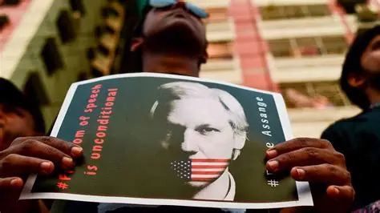

Julian Assange nació en 1971 en Townsville, Australia. Desde joven mostró gran habilidad para la informática y en su adolescencia fue hacker bajo el seudónimo "Mendax", participando en el grupo de hackers International Subversives. Estudió matemáticas, física y programación en la Universidad de Melbourne, aunque no terminó sus estudios.
En 2006 fundó WikiLeaks, una plataforma creada para publicar información clasificada de forma anónima. En 2010 WikiLeaks difundió miles de documentos secretos de Estados Unidos, incluyendo el video "Collateral Murder", que mostraba un ataque aéreo en Irak. Esto le generó apoyo mundial de defensores de la transparencia, pero también persecución legal.

Enfrentó acusaciones de delitos sexuales en Suecia, lo que lo llevó a pedir asilo en la embajada de Ecuador en Londres en 2012 para evitar su extradición. Allí permaneció casi siete años hasta ser arrestado en 2019. Actualmente sigue detenido en Reino Unido mientras lucha contra la extradición a Estados Unidos, donde lo acusan de espionaje y publicación no autorizada de información clasificada.
